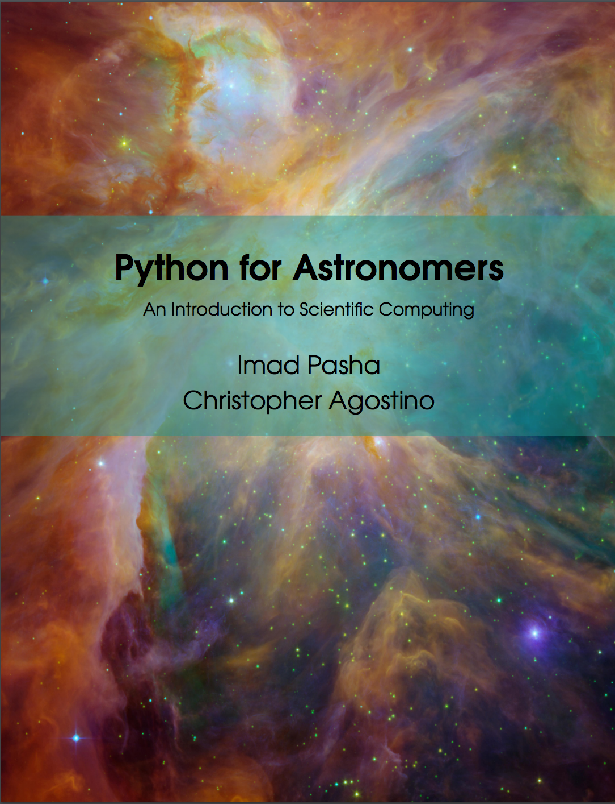

Welcome to Python for Astronomers
This is the living place of Python for Astronomers: An Introduction to Scientific Computing (not to by confused with python4astronomers, which is another good python resource compiled by Tom Aldcroft and several others at the CfA). Coauthored by Imad Pasha and Chris Agostino, this textbook serves as the course text for Astronomy 98/198 at UC Berkeley, and is geared toward introducing basic python at the beginner level with an emphasis toward astronomical applications.
In the interests of open sourcing science and education, we have made the textbook available online here for anyone to use at their will. In addition to the textbook, this site contains several tutorials and resources with the goal of making it straightforward and unintimidating to learn the basics of using python in a reserarch setting. Typical examples of what is covered include
- Basic UNIX and terminal commands, including remote server access.
- An introduction to basic python and syntax.
- Reading in and manipulating data files.
- Spectral analysis and centroiding.
- Image analysis (FITS).
The Textbook and Other Resources
To access the textbook, you can click the image above, click the quick-link on the side, or click the "Textbook" tab at the top of the page. You can also access various tutorials, both interactive and purely instructive, by clicking on the "Tutorials" tab at the top of the page. We also provide resources like guides to UNIX, Vim, SSHing, etc., which are available under the "Resources" page.
About
Imad Pasha is currently an undergraduate student at UC Berkeley. He studies physics and astrophysics, and his research focuses on galaxy evolution and AGN at high redshift.
Quick Links
- THE TEXTBOOK updated frequently
- Tutorials
- Guide to UNIX
- Guide to Vim
- Other Resources
Contact
Questions? Comments? Suggestions? Feel free to get in touch with me at ipasha@berkeley.edu.
This is a test
This is a test of what text looks like in the right class but not in the box. can i do something with this? click the quick-link on the side, or click the "Textbook" tab at the top of the page. You can also access various tutorials, both interactive and purely instructive, by clicking on the "Tutorials" tab at the top of the page. We also provide resources like guides to UNIX, Vim, SSHing, etc., which are available under the "Resources" page.